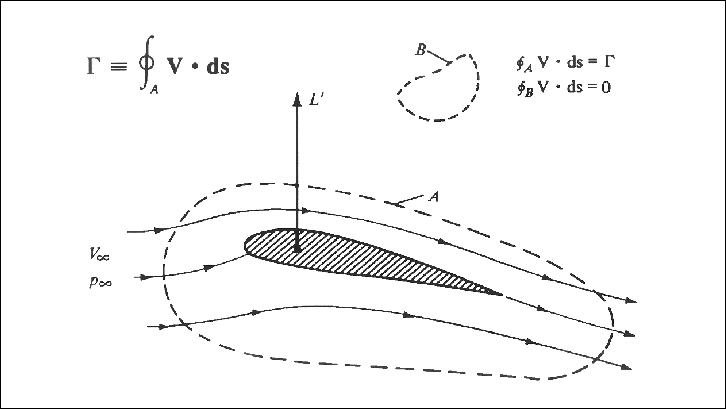
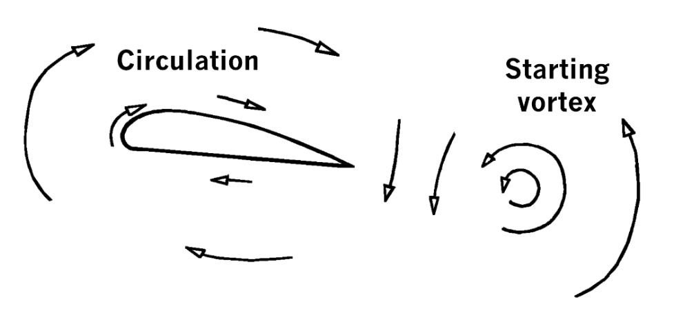
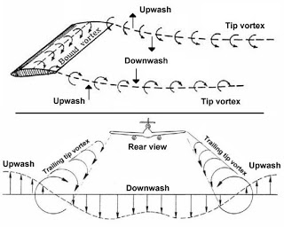
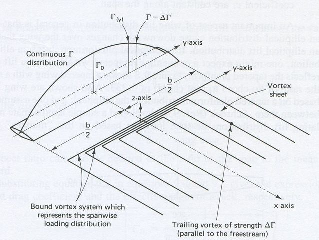

Lift and Lift-Dependent Drag
Lecture 12
ME EN 412
Andrew Ning
aning@byu.edu
Review
\[C_D = f(shape, Re, \epsilon/L, Fr, Ma, C_L)\]
Circulation
\[\Gamma = \oint_C \vec{V} \cdot d\vec{s}\]

Kelvin's Circulation Theorem
- Starting Vortex
- Kutta Condition

Lift curve slope

Flaps and Slats

Downwash


- Newton's third law
- Vortex rollup
- Horseshoe vortices
Induced Drag

\[ {C_D}_i = \frac{C_L^2}{\pi AR e} \] \[ D_i = \frac{L^2}{q_\infty \pi b^2 e} \]
Elliptic Lift Distribution

Total Drag and Lift-to-drag ratio
\[C_D = {C_D}_p + {C_D}_i + {C_D}_c\]
parasite drag + induced drag + compressibility drag
Vortex Lattice and Lifting Line Methods
- Sailing upwind
- Sailing downwind faster than the wind
- Boat or vehicle moving directly downwind faster than the wind